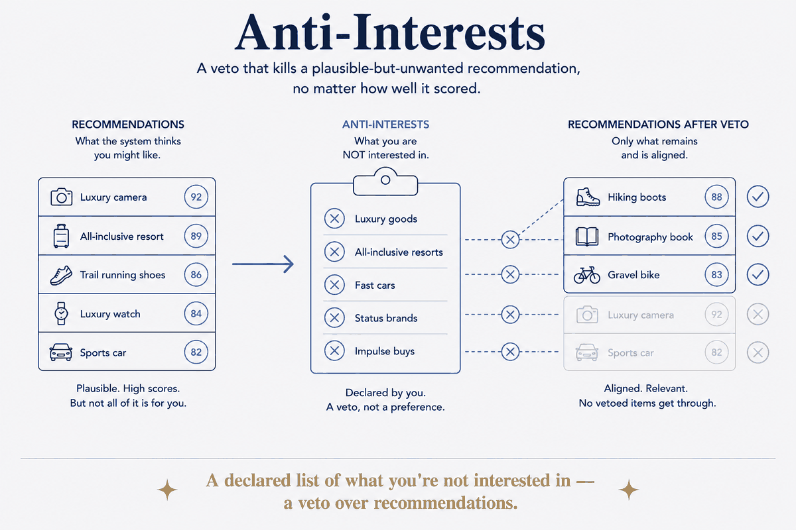

A declared list of what you're not interested in — a veto over recommendations.

An explicit, declared list of what you are not interested in: a veto that kills a plausible-but-unwanted recommendation regardless of how well it scored.
The word doing the work is veto. Not a low score — a hard exclusion. A low score still surfaces when everything else scores lower; a veto never surfaces at all. Systems that only rank will always eventually recommend the museum, because on a quiet Tuesday the museum is the best-scoring thing left.
That's the failure that makes recommenders feel stupid despite being technically right: the suggestion was plausible, well-ranked, and completely unwanted. Ranking can't express no.
Declaring it once fixes it permanently, and it's a small list — most people can name their real anti-interests in a minute. It's the highest-leverage data in the system per word written.